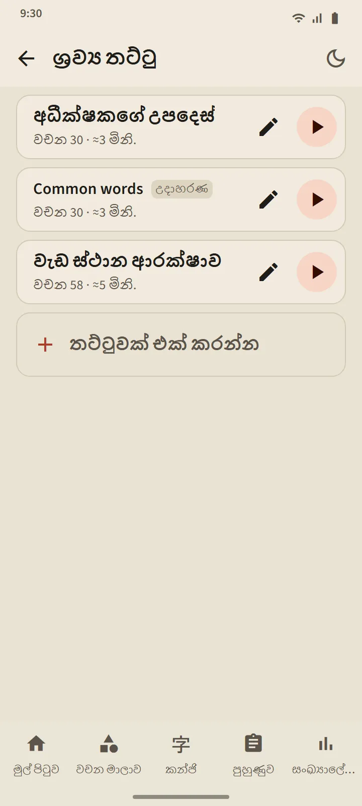
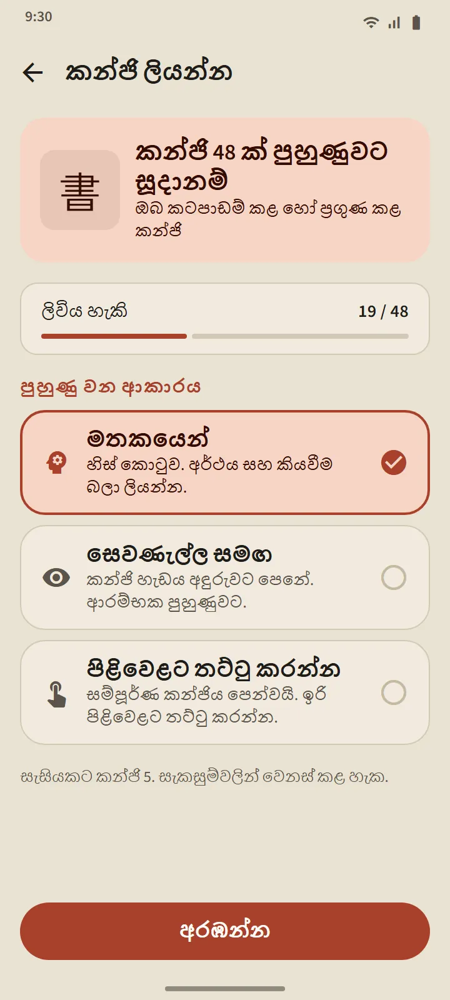

ඔබම සාදන ශ්රව්ය තට්ටු
වචන 5ක සිට 100ක් දක්වා තට්ටුවක් සාදන්න: එකින් එක සොයන්න, නැතහොත් ඕනෑම වචන තට්ටුවකින් තොග වශයෙන් ගන්න. වාදකය සෑම වචනයක්ම ජපන් භාෂාවෙන් කියවයි, ඉන්පසු යෙදුම් භාෂාවෙන් එහි අර්ථය (ජපන් පමණක් සඳහා “අර්ථය හඬ නගා කියවන්න” අක්රිය කරන්න). වත්මන් වචනය ෆුරිගානා සමඟ විශාලව පෙන්වයි; එයට පැනීමට ලැයිස්තුවේ වචනයකට තට්ටු කරන්න.
පාලන: අහඹු පිළිවෙළ, පුනරාවර්තනය, සහ 0.75×, 1× හෝ 1.25× වේගය. තිරය නිවී ගියද හෝ ඔබ යෙදුම් මාරු කළද වාදකය දිගටම ක්රියා කරයි; වාදක දැනුම්දීම සහ හෙඩ්සෙට් බොත්තම් පාලනයේ පවතී.
- නොමිලේ අනුවාදය: තට්ටු 3ක්. Premium: අසීමිතයි, සහ තට්ටුවක් එක් ශ්රව්ය ගොනුවක් (M4A) ලෙස බාගත කළ හැක.
- වැඩිම භාවිත වචනවලින් “Common words” නම් නියැදි තට්ටුවක් ස්වයංක්රීයව සාදයි; ඔබට කැමති ලෙස එය සංස්කරණය කරන්න හෝ මකන්න.
- සවන් දීම වචනයක කාලසටහන හෝ අදියර කිසි විටෙකත් වෙනස් නොකරයි.


කතා පුහුණුව: කියන්න, ඉන්පසු ඉදිරියට යන්න
ඔබ දන්නා හෝ ප්රගුණ කළ වචනයක් කාඩ්පතක පෙන්වයි; මයික්රොෆෝනය ස්වයංක්රීයව ක්රියාත්මක වේ, ඔබ වචනය කියයි, ඔබේ දුරකථනය එය හඳුනා ගත්තොත් ඊළඟ එක පෙන්වයි. නැත්නම්, තිරය එයට ඇසුණු දේ පෙන්වා නැවත සවන් දෙයි; උත්සාහ තුනකට පසු උදාහරණයක් වාදනය කරයි. මයික්රොෆෝන බොත්තම, උදාහරණ බොත්තම සහ මඟ හරින්න සෑම විටම ඇත. සැසියක වචන 5, 10, 15 හෝ 20ක් ඇත.
ඔබේ හඬ සැකසෙන්නේ ඔබේ දුරකථනයේ කථන හඳුනාගැනීමේ සේවාව (සාමාන්යයෙන් Google ගේ) මඟිනි; යෙදුම එය පටිගත කරන්නේවත් ගබඩා කරන්නේවත් නැත. විනිශ්චය කෙරෙන්නේ වචනය පමණි, ඔබේ උච්චාරණ විලාසය නොවේ. කථන හඳුනාගැනීම වැරදි ලෙස ඇසිය හැකි බැවින්, මෙම පුහුණුව වචනයක අදියර කිසි විටෙකත් පහත නොහෙළයි.

කන්ජි ලිවීම: ඉරෙන් ඉර
ඔබ දන්නා හෝ ප්රගුණ කළ කන්ජි සඳහා. අර්ථය සහ කියවීම් පමණක් පෙන්වයි; ඔබ පූර්ණ පළල කොටුවක ලියයි, සහ ඔබ ඇඟිල්ල ඉහළට ගන්නා විට සෑම ඉරක්ම පරීක්ෂා කෙරේ: හැඩය, දිශාව සහ පිළිවෙළ. නිවැරදි ඉරක් සම්මත හැඩයට හැඩ ගැසේ; වැරදි පිළිවෙළක් හෝ ප්රතිවිරුද්ධ දිශාවක් එක් වාක්යයකින් ප්රතික්ෂේප කෙරේ; දෙවරක් වැරදුණු පසු ඊළඟ ඉර එහි ආරම්භක ලක්ෂ්යය සමඟ ලා පැහැයෙන් පෙනේ.
- මතකයෙන්: හිස් කොටුවක්. සෙවණැල්ල සමඟ: කන්ජිය ලා පැහැයෙන් පෙනේ, උණුසුම් වීමට. පිළිවෙළට තට්ටු කරන්න: කන්ජිය සම්පූර්ණයෙන් පෙන්වයි; එහි ඉරි පිළිවෙළට තට්ටු කරන්න.
- සජීවීකරණය බොත්තම ඕනෑම වේලාවක මුළු කන්ජිය ලියන ආකාරය වාදනය කරයි.
- කන්ජියක් ලිවිය හැකි යැයි ගණන් ගැනෙන්නේ ඔබ වෙනස් දින දෙකකදී සහායකින් තොරව මතකයෙන් එය ලියූ පසුවය; සැසියකට කන්ජි 5, 10 හෝ 15.


සෑම තැනකම උච්චාරණය
වචන කාඩ්පත්, කන්ජි කාඩ්පත්, වචන විස්තරය, කානා පාඩම්, ව්යාකරණ උදාහරණ සහ ශ්රවණ ප්රශ්න සියල්ලම කියවන්නේ ඔබේ දුරකථනයේ ජපන් පෙළ-සිට-කථනය (text-to-speech) එන්ජිමෙනි, එබැවින් ශ්රව්ය ගොනු බාගත කිරීම අවශ්ය නැත. හඬේ ගුණාත්මකභාවය එක් එක් දුරකථනයේ එන්ජිම අනුව වෙනස් වේ.